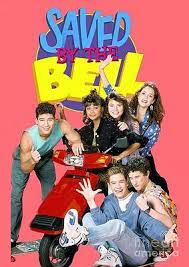
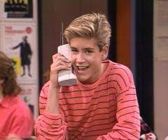
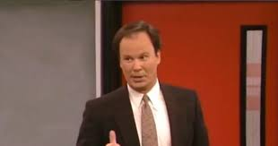
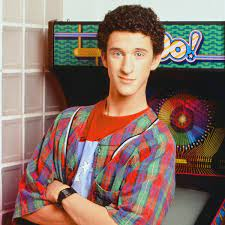

In "Saved by the Bell," Zack Morris is the main dude, leading his crew through wild times at Bayside High in Cali. They're all about juggling crushes, exams, dances, and breakups, while driving their principal, Mr. Belding, totally bonkers. It's a rad mix of school shenanigans and teen drama!
CharactersZack Morris Played by: Mark Grosslaar Richard Belding  Played by: Dennis Haskins Samuel Powers  Played by: Dustin Diamond |